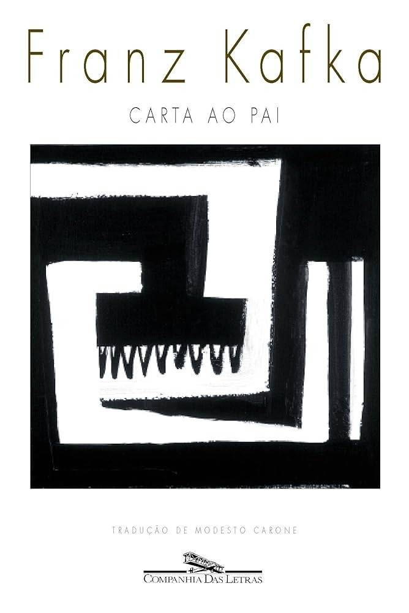
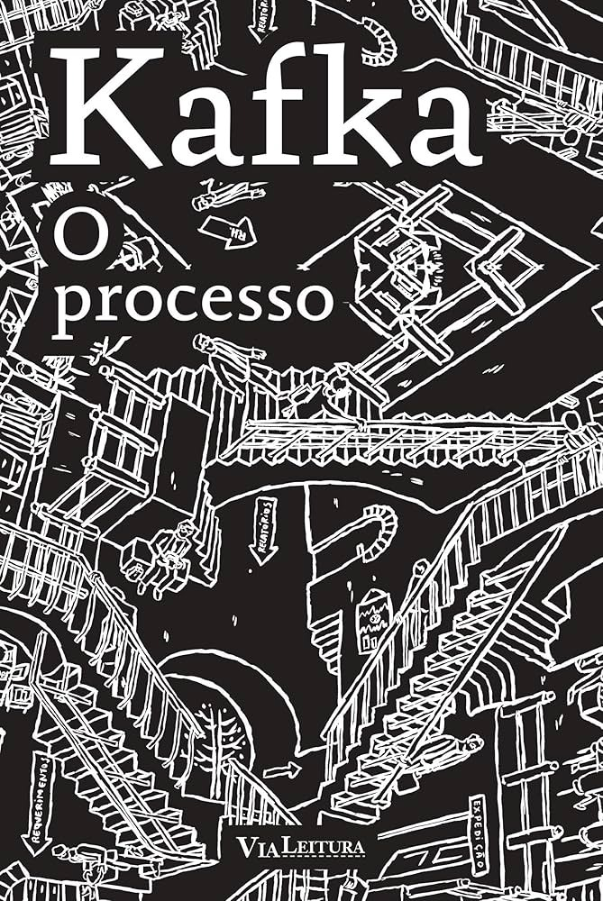

Além de A Metamorfose, Kafka escreveu textos intensos e autobiográficos

Escrita em 1919, essa carta não foi publicada por Kafka, mas é uma das peças mais reveladoras de sua psique. Com cerca de 100 páginas, Kafka expõe sentimentos profundos de medo, inferioridade, culpa e repressão.
A carta nunca foi entregue, mas é essencial para entender os conflitos pessoais que permeiam suas obras. É um retrato íntimo e doloroso do trauma pessoal de Kafka.

Publicado postumamente em 1925, O Processo acompanha Josef K., um homem preso e julgado por um crime desconhecido. A obra simboliza o sentimento de culpa e impotência diante de um sistema burocrático opressor.
É uma narrativa perturbadora e filosófica que questiona a justiça, a alienação e a opressão social.